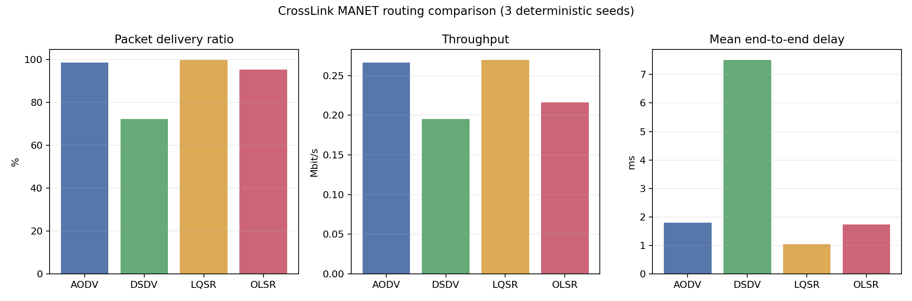
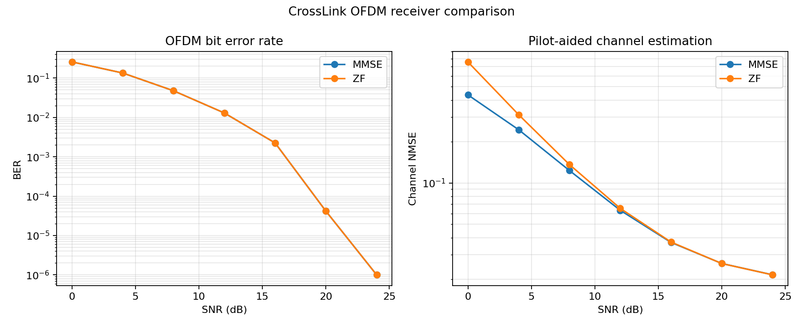
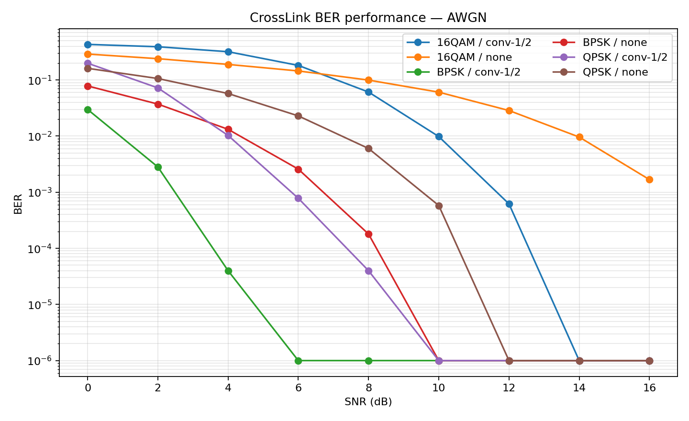
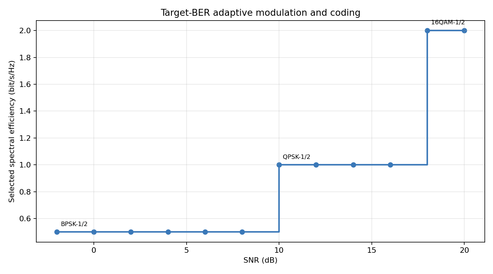

CrossLink 实验报告
无线自组网跨层通信仿真与智能路由优化平台 · 可复现实验输出
路由协议三随机种子均值
| 协议 | PDR | 吞吐量 Mbit/s | 时延 ms |
|---|---|---|---|
| AODV | 98.64% | 0.266 | 1.792 |
| DSDV | 72.34% | 0.195 | 7.512 |
| LQSR | 99.89% | 0.270 | 1.043 |
| OLSR | 95.37% | 0.216 | 1.734 |
MANET 路由对比

OFDM 接收机

AWGN 链路

自适应 MCS
